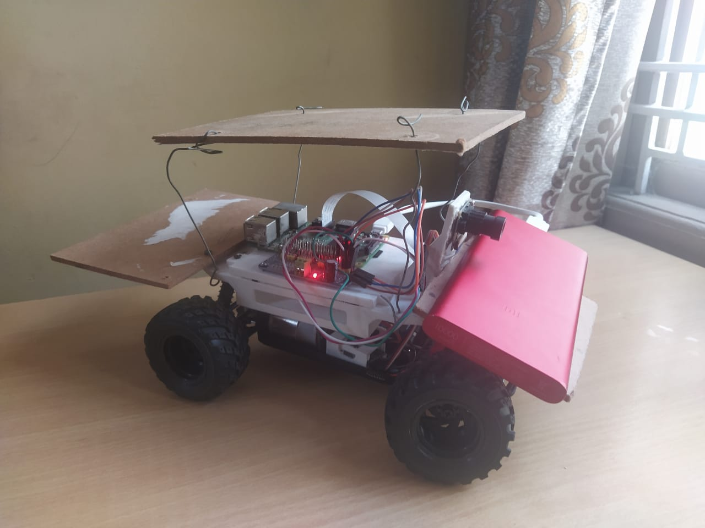

Project Overview
Today, Industries or warehouses are equipped with Automatic Guided Vehicles (AGVs) which do not detect and recognize the contraption which has to be transported and also the route has to be pre planned and fed to the vehicle. AGVs are autonomous vehicles or driverless vehicles used to transfer materials efficiently in a facility or an industry. This project aims to improve the AGVs into intelligent self-driving vehicles. The autonomous driving feature is accomplished with the help of behavioural cloning which tries mimic the driving of the user which was used to train the vehicle. The map of the environment is generated using Monocular Visual Odometry during the training and also during autonomous driving. Monocular meaning that only one camera is used to acquire the images unlike stereo cameras or omnidirectional cameras which are generally used. In an unlikely event of an obstacle present on the path, it is detected using MobileNet SSD method whose input is the live feed captured using the camera placed at the front end of the vehicle. The alternative path is selected using the map generated and PID controller. The controller being used is Raspberry Pi. The processing related to the autonomous driving is done on the controller and the processing related to the image processing is done on the server. The server and the controller are connected using a common wireless network. By splitting the processing to the server and the controller, we are reducing the load on the controller as the processing power of a controller is limited. These ideas have been implemented and the results were observed using a prototype vehicle of 1/16th scale. The vehicle proposed here aims to reduce the overall cost of an intelligent vehicle used in an industry environment and use the resources as efficiently as possible.
